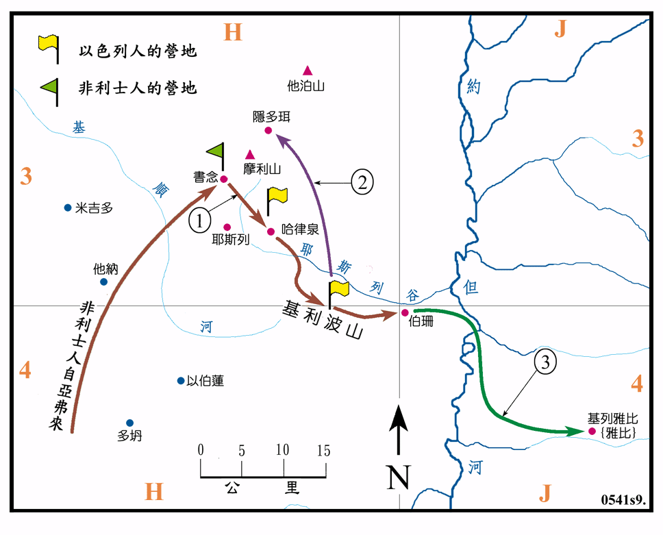

1010BC

行动线说明
| 序号 | 圣经 | 说明 |
|---|---|---|
| 撒上28:4 | 非利士人来到书念安营，扫罗聚集以色列人在基利波山安营。 | |
| 1 | 撒上28:5-25 | 扫罗心生惧怕，就在夜间去隐多珥求见交鬼的妇人。 |
| 撒上29:1 | 以色列人在耶斯列的泉旁安营。 | |
| 2 | 撒上31:6 | 非利士人攻击以色列人，以色列人大败，扫罗的三个儿子都在基利波山战死。扫罗受伤后自刎而亡 (1010BC?)，扫罗共作王四十年。 |
| 3 | 撒上31:10-13 | 非利士人将扫罗等人的 身钉在伯珊的城墙上，基列雅比城的勇士却将 身连夜取回雅比城安葬。 |
此时非利士人又强盛了起来，不但占领了沿海的平原，而且军队还到了书念，要与以色列人在基利波山决战，扫罗看见非利士的军旅壮大就极惧怕，他求问耶和华，耶和华却不回答他，因此他就去求问远在隐多珥交鬼的妇人，这不但犯了他自己所下的禁令，而且也是一件非常危险的事，因为非利士的营防是在书念，正在隐多珥和以色列军的驻地基利波山的中间。要去隐多珥，往返的路程约在40公里以上，路途相当的困难，因为必须下山，渡过耶斯列溪，而最危险的是要绕过非利士人的防区和摩利山，而且隐多珥是在书念之北仅5公里，甚至可能是在非利士军的势力范围之内。